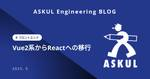
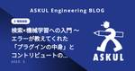
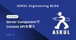

ASKUL Engineering BLOG
https://tech.askul.co.jp/
ASKUL（アスクル）,LOHACO（ロハコ）のエンジニアによる技術ブログです
フィード

Vue2系からReactへの移行
ASKUL Engineering BLOG
こんにちは、LOHACOフロント開発部のちくわです。 今回はLOHACOのフロントエンド技術刷新で使用している技術や実際に触ってみた感想についてお話しします。
14時間前

検索×機械学習への入門 〜 エラーが教えてくれた「プラグインの中身」とコントリビュートのチャンス 1
1
ASKUL Engineering BLOG
こんにちは、6年前に 入社エントリ を書いて以来の中野です！ あれから時が経ち、現在はBtoB領域で商品情報を管理するシステムを担当していて、去年から検索の改善にも取り組み始めています。取り組みの一環として機械学習を活用したランキング改善を検証しているのですが、当初はそもそも機械学習についての知識がゼロの状態でした。 この記事では、そんな私が検索×機械学習に入門した際の経験を共有させていただきます。
2日前

Server ComponentでContext APIを使う
ASKUL Engineering BLOG
こんにちは、アスクルでフロントエンドエンジニアをしているスガイです。 皆様App RouterやReact Server Componentとは仲良くできていますか？ Next.jsでのフロントエンド開発をするにあたり、よりよいUX実現のためにApp RouterそしてReact Server Componentへの理解が大いに求められる昨今です。 本記事ではその中でもServer Component内でContext APIを利用する方法について解説します。
7日前

「レバテックフリーランス」にてASKUL Engineering BLOGをご紹介いただきました！
ASKUL Engineering BLOG
こんにちは、テックブログ運営のずみです。 レバテック株式会社様の運営する「レバテックフリーランス」にて、ASKUL Engineering BLOGをご紹介いただきました！ 『【最新版】エンジニアにおすすめのテックブログまとめ！技術力向上のヒントに』
21日前
AWS Fargateをx86からArm(Graviton)に移行しました
ASKUL Engineering BLOG
こんにちは、アスクルのかわいです。 LOHACOのバックエンドシステムのAWS Fargate上で稼働しているコンテナを、 x86_64(以下x86)ベースからArm(Graviton)ベースに移行したので、そのメリットや変更箇所などについて記述します。
24日前
アスクルトップページのLCPを2.8秒改善した方法
ASKUL Engineering BLOG
こんにちは。フロントエンドエンジニアの祐宗です。 今回は アスクルトップページ のLCPを改善するためにやったことについてご紹介します。
1ヶ月前
Spring Bootベースで構築したアプリケーションに暖気運転を導入してみる
ASKUL Engineering BLOG
こんにちは、LOHACOフロント開発部の昆布です。 私が所属しているチームでは現在、一部のアプリケーションに暖気運転の仕組みを導入中です。今回はJVMにおける暖気運転の手法や効果についてご紹介したいと思います。
1ヶ月前
AWS認定を1年（ダークグレー）で全冠したN番煎じの話
ASKUL Engineering BLOG
こんにちは。約1年ぶりに投稿するアスクルの荒木（@news_it_enj）です。 念願だったAWS認定を全冠（コンプリート）できたのでブログを書きます！ 「全冠した」というブログなどは世の中にたくさんあると思いますが、煎じて煎じて煎じまくっていきます！ こういう話はなんぼあってもよいものですよね。
2ヶ月前
Power Automateで業務効率向上を目指し業務を半自動化した話
ASKUL Engineering BLOG
平素よりお世話になっております。 アスクルに入社してもうすぐで3年目になるもりぱーです。 普段の業務は、注文領域を担当するバックエンドチームに所属して注文の処理するAPIの開発や性能改善をしています。 今回は、Power Automateを使って業務を半自動化したことを紹介します。
2ヶ月前
リモートワークの作業環境紹介
ASKUL Engineering BLOG
こんにちは。アスクルのksです。 リモートワークするようになって数年経ち、仕事しやすい作業環境をいろいろ試しました。 現在、比較的満足な環境になったので、紹介したいと思います。
2ヶ月前
出向について
ASKUL Engineering BLOG
こんにちは、LOHACOフロント開発部の生駒です。新卒でアスクルに入社して3年目になり、今年からLINEヤフー株式会社に主務出向してお仕事をしています。 今回のエントリではなぜ僕が出向しているのか、出向先でどんなことをしているかについて記述していこうと思います。
2ヶ月前
OracleからPostgreSQLへのDB移行
ASKUL Engineering BLOG
こんにちは！ アスクルの住石です。 今回は、OracleからPostgreSQLにデータを移行したので、そのお話をしようと思います！
2ヶ月前
エンジニアサミット2025が開催されました！
ASKUL Engineering BLOG
こんにちは。アスクルのうちやまとたかはち（@nemuki_dev）です！ 今回は2025年2月に「エンジニアサミット2025」が開催されたので、その様子をお届けします！
2ヶ月前
Embulkで複雑なクエリを処理してデータ移行する
ASKUL Engineering BLOG
こんにちは、アスクルのユウです。 Embulkを用いてデータ移行をしたのですが、データ抽出のクエリが複雑になってしまい思ったようにパフォーマンスがでませんでした。 今回対応した方法を記載します。
3ヶ月前
アスクルの福利厚生を活用してAWSの資格を取得しました
ASKUL Engineering BLOG
はじめまして。 アスクルに入社してもうすぐ3年目になるSoraです。 普段は、AWSエンジニアとして社内外のサービスに関わるクラウドインフラの設計・構築・保守・運用などを行っています。 今回は、アスクルの福利厚生を活用してAWSの資格（SAA/SOA）を取得したときの体験談についてお話ししようと思います。 ※本記事の内容は2024年の記事執筆時点の情報に基づいております。記事中に出てくる制度は変更になる可能性があります。
3ヶ月前
注目のキャッシュサービスのValkeyをSpring Boot(Kotlin)で使ってみた
ASKUL Engineering BLOG
こんにちは。アスクルの加藤です。 私が所属するチームで開発しているシステムでAmazon RDSを使用しており、そこにキャッシュを導入することになりました。 ちょうどその頃Valkeyが話題になっており、検討の結果Amazon ElastiCacheでValkeyを使用することになりました。 今回はSpring Boot(Kotlin)でAmazon ElastiCacheのValkeyを使ってみたので、その手順や設定を紹介します。
4ヶ月前
【社内勉強会】AStudy Advent Calendar 2024を実施しました！
ASKUL Engineering BLOG
はじめまして。アスクルのたかはち（@nemuki_dev）です！ 今回は2024年12月のAStudyでAdvent Calendarを実施したので、その様子をお届けします。
4ヶ月前
デザインシステム構築によるフロント開発環境改善
ASKUL Engineering BLOG
こんにちは。アスクル初のデザインエンジニアになることを目論んでいる現フロントエンドエンジニアの谷です。 本記事では、サイトのフロント刷新のために1からデザインシステムを構築したという取り組みについてご紹介します。
10ヶ月前
VPCエンドポイントを活用したコスト削減 完全版 - 後編
ASKUL Engineering BLOG
こんにちは。アスクルの荒木（@news_it_enj）です。 先日投稿した VPCエンドポイントを活用したコスト削減 完全版 - 前編 の後編になります。
1年前
VPCエンドポイントを活用したコスト削減 完全版 - 前編
ASKUL Engineering BLOG
こんにちは。初投稿するアスクルの荒木（@news_it_enj）です。 先日 第1回 AWSコスト削減 天下一武道会 で登壇した「VPCエンドポイントを活用したコスト削減」について泣く泣く削った内容などを補足した記事になります。 ブログ慣れするために、前編・後編に分けてお届けさせてください。
1年前
ECSのRunTaskはECSの起動を保証するわけではないという話
ASKUL Engineering BLOG
こんにちは。ASKULのほかほかごはんです。現在は商品チームで主にバッチアプリケーションの開発を担当しています 😀 本記事ではAWS上でのECSを利用したバッチアプリケーション開発で遭遇した運用上の問題について記述します。
3年前
懇親会する時にイケてる振り分けをしてくれるシステムを新卒4人で作った話 【Internal Hack Day 19】
ASKUL Engineering BLOG
はじめに こんにちは！ 初めまして！ 今年の新卒としてアスクル株式会社へ入社したラーメン (@ramendaDev) です。 今回の記事では、 2022年8月6日-8日にかけて開催された、ヤフー株式会社主催の「Internal Hack Day19」について振り返ります。
3年前
Kotlin の emptyList.all { false } が true になるということ
ASKUL Engineering BLOG
こんにちは。しゅん（@MxShun）です。 突然ですが、次のKotlinコードの「any」「all」「none」がそれぞれtrue/falseのどちらを返却するか分かりますか？ val numbers = listOf(1, 2) numbers.any { it > 0 } numbers.all { it > 0 } numbers.none { it > 0 }
3年前
🆒 な関数名選手権
ASKUL Engineering BLOG
こんにちは。しゅん（@MxShun）です。 はじめに みんな～コーディングしてる～？（Yeah～！）命名してる～？（Yeah～！） コーディングをしていくうえで避けては通れない、関数や変数のネーミング。 この記事では、言語公式・組込みなメソッドの中で、私が 🆒 と感じた関数名をランキング形式で3つ紹介します。 ※本記事は、社内で実施したAdvent Calendar投稿記事を一部改変したものです。
3年前
Kotlin Coroutines のために AWS SDK for Java でノンブロッキングを実現する
ASKUL Engineering BLOG
アスクルの こたにん (@Kotanin0) です。 Kotlin で AWS SDK を利用するには、今現在はJavaのものを使う必要がある AWS SDK for Java 2.x の非同期プログラミングはブロッキングされる AWS SDK for Java でノンブロッキングを実現する まとめ Kotlin で AWS SDK を利用するには、今現在はJavaのものを使う必要がある KotlinでAWSのいろいろを操作する際に、AWSが提供しているSDKを利用すると便利です。 が、2022年3月現在、Kotlin向けのAWS SDKはプレビュー版で、正式リリースがされていません。 AWS…
3年前
Kotlin における trailing comma(末尾カンマ) について
ASKUL Engineering BLOG
アスクルの こたにん (@Kotanin0) です。 2020年のリリースですが、Kotlin 1.4からtrailing commaが実装 されました。 trailing comma とは 末尾カンマ と訳されるもので、関数などの引数のリストの末尾にあるカンマのことを指します。 fun usingComma( first: String, second: String, third: String, // <- ココのカンマのことを trailing comma(末尾カンマ) と呼ぶ ) めちゃくちゃ細かい仕様ですが、Kotlin1.4からは、このtrailing commaを記述できるよう…
3年前
MyBatisで大量データを扱う
ASKUL Engineering BLOG
こんにちは。ASKULのほかほかごはんです。最近は商品データに関するバッチ開発を担当しています。 バッチ開発では、社内外へデータを連係する際に大量のデータをDBから取得し、csvなどのファイルに加工する機会が多くあります。 本記事では効率的にQuery結果をハンドリングする方法として、 MyBatisのResultHandlerとCursorを紹介します。 なお、弊社ではSpring Boot上でMyBatisを利用しています。 本記事のサンプルコードもその前提で紹介させていただきます 🙇♂️
3年前
MyBatis 動的SQL の trim が便利なので使い方のまとめ（ついでにコード読んでみた）
ASKUL Engineering BLOG
アスクルの こたにん (@Kotanin0) です。 アスクルでは、O/Rマッパーに MyBatis3 を使っています。 MyBatisは、単純なCRUD操作だけでなく、 動的SQL という便利な拡張構文があります。 たとえば、本の情報を管理するテーブルから、本の一覧を抽出したいSQLがあったとします。 本のタイトルを指定しなければ全件SELECT 本のタイトルを指定していればWHERE句を入れてSELECT と、本のタイトルの指定有無でif文を書きたいような場面では、次のように if 要素を利用すると解決できます。 <select> SELECT * FROM BOOK <if test="…
3年前
Kotlin 1.6ではList.minus(List)の処理速度がデフォルトだと若干遅くなってしまうという話
ASKUL Engineering BLOG
こんにちは。ASKULのほかほかごはんです。今回はKotlin1.6におけるCollection操作についての記事になります。 List1からList2の要素を除去する場合、Kotlinでは次のように書けます。 val result = list1 - list2 このコードはKotlin 1.6ではこう書いたほうがパフォーマンスがよくなります (とIntelliJ先生が教えてくれました 😇) val result = list1 - list2.toSet() しかし、Kotlin 1.5まではこのコードについてIntelliJがアドバイスをくれることはなかったはずです 🤔 これは、Kotl…
3年前
【社内勉強会】クリーンアーキテクチャ【AStudy】
ASKUL Engineering BLOG
こんにちは、のんです。 今回は2021/10/28(金)に実施したAStudyより、タイタンさんに登壇いただいた「クリーンアーキテクチャ」をとりあげます。
3年前